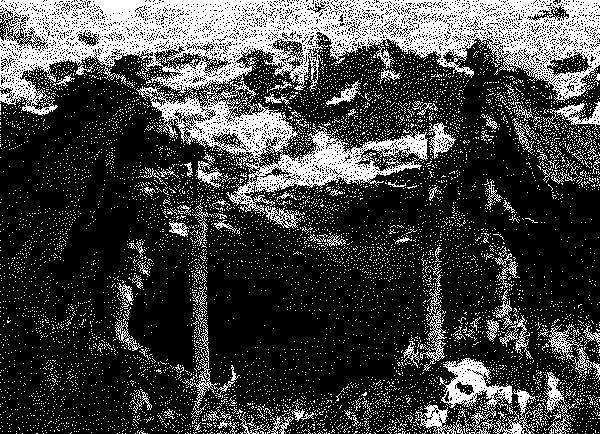

data collection//:[first age]
push://severed-sons::reformation
engage #protect-protect...[
run://aether-ascension.exe]
initiate:// watchtower
bank 1
bank 2
ego-death
ego-death
ego-death
ego-death
ego-death
ego-death
[config.[fromoblivion] //- 0179 -//
// #dest : "elysian's basin"
//[SS] : i.c.a vol 09
//class="severed"
.program [dread march]